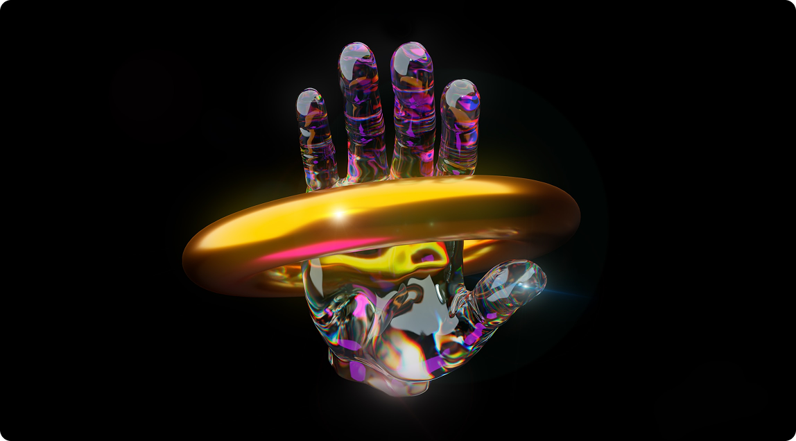
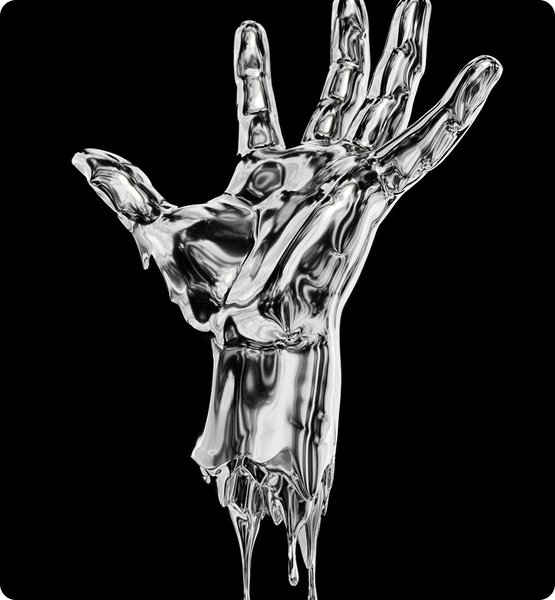

История проекта
То, что фотография имеет разное значение для разных людей, — одна из многих причин ее популярности. Фотография стала настолько важной частью нашей жизни, что сейчас сложно представить мир без нее.
Мы не можем представить себе свадьбу без возможности запечатлеть ее на пленку, мы не смогли бы вспомнить, как росли наши дети, или как проходили праздники, если бы у нас не было фотографий.

День первый
Нас повсюду преследуют фотографии в газетах, журналах, рекламе на телевидении и в интернете, но мы все равно хотим еще больше.
А что помогает добиться хорошего результата? Мы рассмотрим эти вопросы и некоторые возможности фотографии и объясним, что это сочетание творческого мышления, визуального дизайна, технических и организационных навыков.